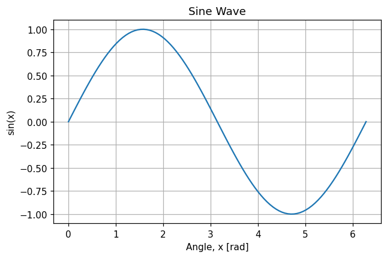
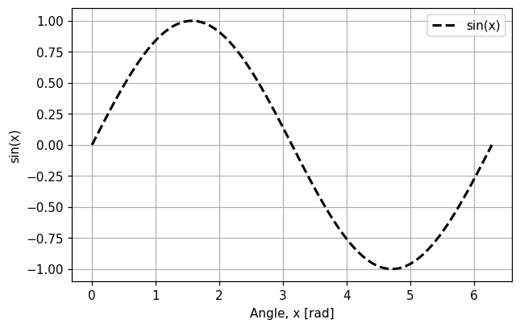
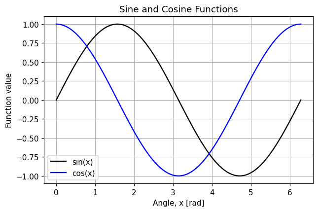
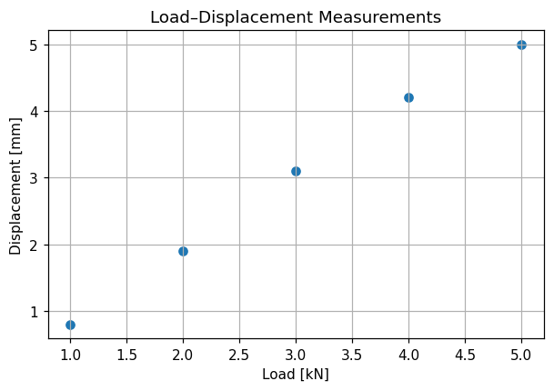
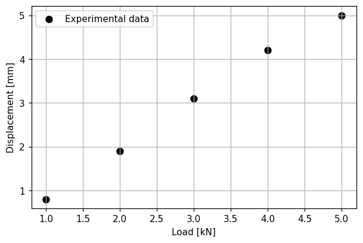
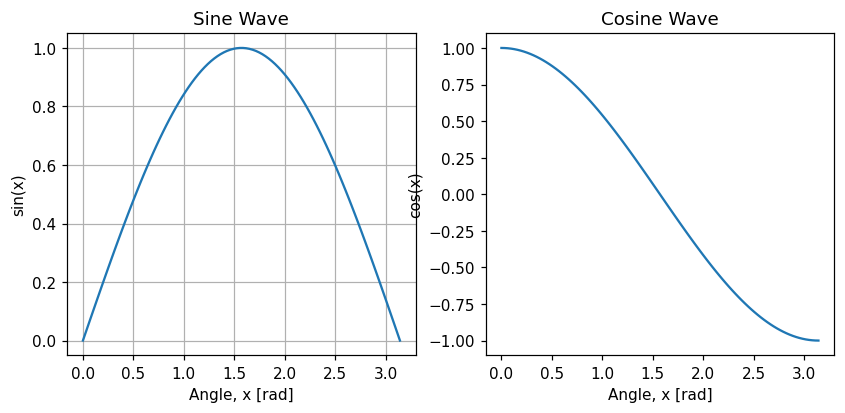
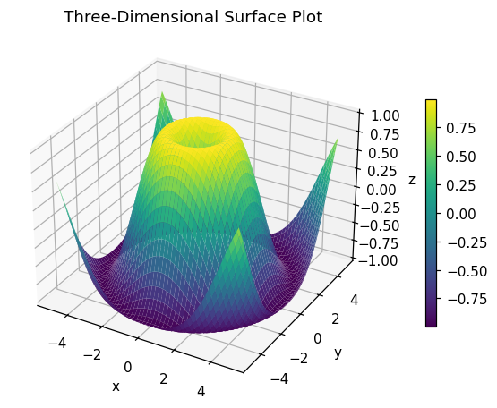

1Introduction
Python is a high-level programming language used in engineering, scientific computing, data analysis, automation, and many other fields. One of Python’s principal strengths is its extensive ecosystem of modules, packages, and libraries. These resources provide tested implementations of common operations, allowing engineers and scientists to focus on the problem rather than implementing every operation from scratch. The following terms are important:
- Module: a Python file containing definitions, functions, classes, or executable statements that another program can import.
- Package: a structured collection of Python modules and related files. A package is typically organised in one or more directories.
- Library: a general term for a collection of reusable code designed to support a particular range of tasks. A library can contain one or more packages and modules.
People sometimes use these terms informally and interchangeably. However, a module is normally a single importable unit, whereas a package can contain several modules. Python is highly modular. This means that programs can be assembled from separate components, each providing a particular set of capabilities.
For example, Python’s standard-library module random provides tools for generating pseudo-random values and selecting random items. NumPy provides numerical arrays and mathematical operations, while Matplotlib provides plotting and visualisation tools. Using existing packages, such as these, offers several benefits:
- Common algorithms and operations do not need to be written from scratch.
- Widely used packages are normally tested by large user and developer communities.
- Programs can be divided into clear and manageable components.
- Scientific and engineering calculations can use efficient implementations written in compiled languages.
- The same tools can be reused across different projects.
However, importing a package does not necessarily mean that every part of the package is loaded into memory. Python can import a complete package, a submodule, or selected objects from a module. Examples of widely used scientific Python packages include:
numpy: numerical arrays and array-based computationmatplotlib: plotting and visualisationscipy: scientific algorithms, including optimisation, integration, statistics, and signal processing
Python also includes a standard library. Standard-library modules, such as math, random, and pathlib, are distributed with Python and usually do not require separate installation. Third-party packages, such as NumPy, Matplotlib, and SciPy, are normally installed separately using a package-management tool.
2Managing packages using pip
The pip tool is commonly used to install and manage third-party Python packages. Packages can be installed from a command prompt or terminal. For example, to install three packages, numpy, matplotlib, and scipy, run the following command:
In the Terminal, if the Python command is python3:
- Install:
python3 -m pip install numpy matplotlib scipy - List installed packages:
python3 -m pip list - Update a package:
python3 -m pip install --upgrade numpy
In the Command Prompt, the Python launcher can be used:
- Install:
py -m pip install numpy matplotlib scipy - List installed packages:
py -m pip list - Update a package:
py -m pip install --upgrade numpy
The live Python windows and notebook on this site run in your browser, so there is no terminal. NumPy, Matplotlib, pandas and SciPy are already available: just import them (the first import takes a few seconds). Other pure-Python packages can be installed from a code cell with %pip install package_name.
Installing or updating packages can change the behaviour of existing programs if a package introduces incompatible changes. For assessed work and reproducible scientific computing, it can be useful to record the package versions used in the analysis:
import numpy as np
import matplotlib
print("NumPy version:", np.__version__)
print("Matplotlib version:", matplotlib.__version__)3Importing packages and modules
After installing a package, you must normally import it before you can use its functions and objects. In a Jupyter Notebook, imports are commonly placed in the first code cell. For example:
import numpy as np
import matplotlib.pyplot as plt
print('imports completed')imports completed
Printing a confirmation that imports are complete is a personal preference, but it is a quick way to make sure your code runs smoothly with all libraries imported. The keyword as assigns an alias to an imported package or module. Aliases reduce the length of subsequent code. The aliases np and plt (and pd for pandas) are widely used conventions within the community.
It is also possible to import an individual object from a module:
from numpy import pi
print(pi)3.141592653589793
An imported package remains available while the current Python session or Jupyter kernel remains active. If the Jupyter kernel is restarted, the import cells must be executed again. Saving a notebook preserves its code and displayed outputs, but it does not preserve the active state of the Python kernel. (The same applies to each live window on this page: it starts with a fresh Python, so every example imports what it needs.)
After import numpy as np, which line creates an array?
The alias np is the only name created by that import. numpy itself is not defined (a NameError), and array on its own would need from numpy import array.
Exercise 3.1. The standard-library module math needs no installation. Import it, then print \(\sqrt{2}\) using math.sqrt() and the value of math.pi. Then import just sqrt with from … import … and use it without the math. prefix.
# Write your code here
Show a solution
import math
print(math.sqrt(2))
print(math.pi)
from math import sqrt
print(sqrt(2))1.4142135623730951 3.141592653589793 1.4142135623730951
4Numerical computation with NumPy
NumPy is short for Numerical Python. It provides data structures and functions for efficient numerical computation.
4.1 NumPy arrays
A central NumPy object is the ndarray, which represents an n-dimensional array. NumPy arrays are widely used in engineering for numerical datasets, vectors and matrices, time-series measurements, discretised spatial domains, images, multidimensional data, and more. NumPy arrays can be created in several ways. For example, one-dimensional arrays can be created from Python lists.
import numpy as np
a = np.array([1, 2, 3, 4])
print(a)[1 2 3 4]
A two-dimensional array can be created from a nested list:
b = np.array([
[2, 3, 5],
[7, 12, 1]
])
print(b)[[ 2 3 5] [ 7 12 1]]
The array b has two rows and three columns. An array can have more than two dimensions. NumPy therefore uses the general term n-dimensional array rather than restricting arrays to vectors and matrices. Notice that NumPy prints arrays without commas, and pads the numbers so the columns line up.
4.2 Array data types
Unlike a Python list, a NumPy array normally stores elements using one common data type, called its dtype. If integers and floating-point values are combined, NumPy normally selects a common type that can represent all the values, for example a floating-point type that can represent both integers and floating-point numerical data. See the examples below:
integer_array = np.array([1, 2, 3])
float_array = np.array([1.0, 2.0, 3.0])
mixed_array = np.array([1, 2.5, 3])
print(integer_array.dtype)
print(float_array.dtype)
print(mixed_array.dtype)int64 float64 float64
While creating a NumPy array, you may also request a specific data type:
values = np.array([1, 2, 3], dtype=float)
print(values)[1. 2. 3.]
NumPy arrays are not restricted to integers and floating-point numbers. They can also store Boolean values, complex numbers, strings, and Python objects. However, the main performance benefits of NumPy occur when arrays contain values of a consistent numerical data type. The trailing dot in [1. 2. 3.] is how NumPy shows floats that happen to be whole numbers.
What is np.array([1, 2.5, 3]).dtype?
An array has one dtype. The 2.5 cannot be stored as an integer, so NumPy uses float64 for all three values: [1. 2.5 3. ].
4.3 Python lists and NumPy arrays
NumPy arrays and Python lists may seem similar at first glance; however, it is important to understand the differences between the two and how they can affect your code. The following points summarise the principal differences:
| Python list | NumPy array |
|---|---|
| Can naturally store objects of different types | Normally stores elements using one common data type |
| General-purpose containers | Designed for efficient array-based numerical computation |
| Arithmetic operators generally act on the list itself rather than on its individual elements | Arithmetic operators generally act element-wise |
| Do not directly support vectorised numerical operations | Support vectorised operations and multidimensional indexing |
| Can use more memory and be slower for large numerical calculations | Can provide lower memory use and faster numerical operations |
For example, multiplying a Python list by two repeats the list, while multiplying a NumPy array by two multiplies every element.
python_list = [1, 2, 3]
numpy_array = np.array([1, 2, 3])
print(python_list * 2)
print(numpy_array * 2)[1, 2, 3, 1, 2, 3] [2 4 6]
4.4 Array properties
Several properties can be used to inspect an array:
a = np.array([
[2, 3, 5],
[7, 12, 1]
])
print("Shape:", a.shape)
print("Number of dimensions:", a.ndim)
print("Number of elements:", a.size)
print("Data type:", a.dtype)Shape: (2, 3) Number of dimensions: 2 Number of elements: 6 Data type: int64
4.5 Indexing and slicing arrays
One-dimensional NumPy arrays use indexing and slicing similar to Python lists:
values = np.array([10, 20, 30, 40, 50])
print(values[0])
print(values[-1])
print(values[1:4])10 50 [20 30 40]
For a two-dimensional array, a row and column index can be specified, separated by a comma:
matrix = np.array([
[10, 20, 30],
[40, 50, 60]
])
print(matrix[0, 1])
print(matrix[1, 2])20 60
A complete row or column can be selected using a colon:
print(matrix[0, :])
print(matrix[:, 1])[10 20 30] [20 50]
For matrix above, what does matrix[:, 1] give?
The colon means “every row”, and 1 picks the second column, so you get one value from each row in that column.
Exercise 4.1. A thermocouple recorded temperatures (°C) four times a day for three days: [[18.2, 21.5, 24.1, 19.8], [17.9, 22.3, 25.0, 20.4], [16.5, 20.1, 23.7, 18.9]]. Store them in a 2-D array with one row per day. Print its shape, number of dimensions, size and dtype; then print the third reading of day 2, all of day 1, and the first reading of every day.
import numpy as np
# Write your code here
Show a solution
import numpy as np
temperatures = np.array([
[18.2, 21.5, 24.1, 19.8],
[17.9, 22.3, 25.0, 20.4],
[16.5, 20.1, 23.7, 18.9]
])
print(temperatures.shape, temperatures.ndim, temperatures.size, temperatures.dtype)
print(temperatures[1, 2]) # day 2, reading 3
print(temperatures[0, :]) # all of day 1
print(temperatures[:, 0]) # first reading of every day(3, 4) 2 12 float64 25.0 [18.2 21.5 24.1 19.8] [18.2 17.9 16.5]
5Useful functions for creating arrays
NumPy provides several functions for creating numerical arrays.
5.1 np.arange()
The function np.arange(start, stop, step) creates an array of evenly spaced values using a specified step size. For example:
a = np.arange(0, 10, 2)
print(a)[0 2 4 6 8]
The start value is included, while the stop value is normally excluded. For integer sequences, np.arange() behaves similarly to Python’s range() function from week 2.
Care is required when np.arange() is used with a floating-point step because floating-point rounding can produce an unexpected final value. For example, np.arange(1, 1.3, 0.1) gives [1. 1.1 1.2 1.3]: the “excluded” stop value appears. When you know the required number of samples and interval endpoints, np.linspace() is usually preferable.
5.2 np.linspace()
The function np.linspace(start, stop, num) returns a specified number of evenly spaced samples between the start and stop values. For example:
b = np.linspace(0, 1, 5, endpoint=True)
print(b)[0. 0.25 0.5 0.75 1. ]
By default, both endpoints are included. The third argument specifies the number of samples, not the number of segments. Therefore, five samples divide the interval into four equal segments. The endpoint can be excluded with endpoint=False.
What does np.linspace(0, 10, 5) return?
Five samples including both ends make four equal gaps of 10 / 4 = 2.5.
5.3 np.zeros() and np.ones()
A common way of creating NumPy arrays is to create an array with uniform numbers, like all 1 or all 0, and populate the elements later through your code. These arrays can be initialised with zeros or ones:
zero_vector = np.zeros(5)
one_matrix = np.ones((2, 3))
print(zero_vector)
print(one_matrix)[0. 0. 0. 0. 0.] [[1. 1. 1.] [1. 1. 1.]]
The shape of a multidimensional array is supplied as a tuple, such as (2, 3) or (2, 3, 18). An identity matrix can be created using np.eye():
identity_matrix = np.eye(3)
print(identity_matrix)[[1. 0. 0.] [0. 1. 0.] [0. 0. 1.]]
5.4 np.meshgrid()
The function np.meshgrid() creates coordinate arrays from one-dimensional coordinate vectors. It is useful for evaluating a function over a two-dimensional domain. For example:
x = np.array([1, 2, 3])
y = np.array([4, 5])
X, Y = np.meshgrid(x, y)
print(X)
print(Y)[[1 2 3] [1 2 3]] [[4 4 4] [5 5 5]]
The array X contains the x-coordinate of each grid point, and Y contains the corresponding y-coordinate.
A function of two variables can then be evaluated at every grid point:
Z = X**2 + Y**2
print(Z)[[17 20 25] [26 29 34]]
Exercise 5.1. For the 24 m footbridge from week 1 with a uniform load \(w = 15\) kN/m, the bending moment at a distance \(x\) from one support is \(M(x) = \dfrac{w\,x\,(L - x)}{2}\). Use np.linspace() to create 13 positions from 0 to 24 m, calculate \(M\) at all of them in one line, and print the positions, the moments and the largest moment with np.max().
import numpy as np
# Write your code here
Show a solution
import numpy as np
L = 24.0 # m
w = 15.0 # kN/m
x = np.linspace(0, L, 13)
M = w * x * (L - x) / 2
print(x)
print(M)
print("Maximum moment:", np.max(M), "kNm")[ 0. 2. 4. 6. 8. 10. 12. 14. 16. 18. 20. 22. 24.]
[ 0. 330. 600. 810. 960. 1050. 1080. 1050. 960. 810. 600. 330.
0.]
Maximum moment: 1080.0 kNm
The maximum, 1080 kNm at mid-span, matches the \(wL^2/8\) you calculated in week 1. NumPy wraps long arrays over several lines when printing.
6Operations on NumPy arrays
6.1 Element-wise operations
NumPy mathematical operations usually act element-wise. Consider the following arrays:
a = np.array([1, 2, 3])
b = np.array([4, 5, 6])
c = a + b
d = a - b
e = a * b
f = a / b
print(c)
print(d)
print(e)
print(f)[5 7 9] [-3 -3 -3] [ 4 10 18] [0.25 0.4 0.5 ]
You can even pass an array into a function, which calculates the result for each element and returns the results as another NumPy array. For example, using np.sin(), which calculates \(\sin(x)\):
angles = np.array([0, np.pi / 2, np.pi])
results = np.sin(angles)
print(results)
print(type(results))[0.0000000e+00 1.0000000e+00 1.2246468e-16] <class 'numpy.ndarray'>
\(\sin(\pi)\) should be exactly 0, but the computer gives 1.2246468e-16, about \(10^{-16}\). This is the floating-point precision you met in week 1: np.pi is only an approximation of \(\pi\). Because one value is so small, NumPy prints the whole array in scientific notation.
When you multiply two NumPy arrays, the * operator performs element-wise multiplication, so the arrays must have compatible shapes.
x = np.array([
[2, 4, 5],
[3, 1, 6]
])
y = np.array([
[1, 0, 2],
[4, 3, 5]
])
elementwise_product = x * y
print(elementwise_product)[[ 2 0 10] [12 3 30]]
6.2 Matrix multiplication
The @ operator performs matrix multiplication. For two-dimensional arrays, the number of columns in the first matrix must equal the number of rows in the second matrix. For example:
A = np.array([
[2, 4, 5],
[3, 1, 6]
])
B = np.array([
[1, 4],
[0, 3],
[2, 5]
])
C = A @ B
print(C)[[12 45] [15 45]]
The transpose of a two-dimensional array can be obtained using either np.transpose() or the .T attribute:
A_transpose_1 = np.transpose(A)
A_transpose_2 = A.T
print(A_transpose_1)
print(A_transpose_2)[[2 3] [4 1] [5 6]] [[2 3] [4 1] [5 6]]
A has shape (2, 3) and B has shape (3, 2). What is the shape of A @ B, and what happens with A * B?
For @, the inner sizes (3 and 3) must match and the outer sizes give the result: (2, 2). Element-wise * needs matching shapes, and (2, 3) and (3, 2) do not match, so NumPy raises a ValueError.
6.3 Summary statistics
NumPy provides several functions for summarising numerical arrays:
measurements = np.array([12.4, 12.8, 13.1, 12.7])
print("Sum:", np.sum(measurements))
print("Mean:", np.mean(measurements))
print("Minimum:", np.min(measurements))
print("Maximum:", np.max(measurements))
print("Standard deviation:", np.std(measurements))Sum: 51.0 Mean: 12.75 Minimum: 12.4 Maximum: 13.1 Standard deviation: 0.2499999999999998
For a multidimensional array, a calculation can be applied to the full array or along a specified axis. With axis=0 the calculation runs down the rows, giving one result per column; with axis=1 it runs along each row, giving one result per row:
data = np.array([
[1, 2, 3],
[4, 5, 6]
])
print(np.mean(data))
print(np.mean(data, axis=0))
print(np.mean(data, axis=1))3.5 [2.5 3.5 4.5] [2. 5.]
A note on the handout’s wording. The handout says axis=0 “is the columns” and axis=1 “is the rows”. That describes the result: axis=0 works down the rows and gives one value per column, and axis=1 works along each row and gives one value per row. Use the widget above if you are unsure which way an axis goes.
6.4 Sorting
The function np.sort() returns a sorted copy of an array:
a = np.array([3, 1, 4, 2])
sorted_a = np.sort(a)
print(sorted_a)
print(a)[1 2 3 4] [3 1 4 2]
The original array is unchanged. The sort() method sorts the array in place:
a.sort()
print(a)[1 2 3 4]
For a multidimensional array, the axis can be specified:
a = np.array([
[3, 1, 2],
[6, 4, 5]
])
print(np.sort(a, axis=0))
print(np.sort(a, axis=1))[[3 1 2] [6 4 5]] [[1 2 3] [4 5 6]]
Sorting down the columns (axis=0) changes nothing here, because every column is already in order; sorting along the rows (axis=1) sorts each row separately.
Exercise 6.1. Strain gauges on a steel member read [420, 515, 388, 602, 471] microstrain. With \(E = 200\,000\) MPa, the stress is \(\sigma = E\,\varepsilon\) (remember 1 microstrain = \(10^{-6}\)). Calculate all five stresses in one line, then print their mean, maximum and standard deviation, and the stresses sorted from smallest to largest.
import numpy as np
# Write your code here
Show a solution
import numpy as np
E = 200_000 # MPa
strain = np.array([420, 515, 388, 602, 471]) * 1e-6
stress = E * strain # MPa, element-wise
print(stress)
print("Mean:", np.mean(stress))
print("Maximum:", np.max(stress))
print("Std:", np.std(stress))
print(np.sort(stress))[ 84. 103. 77.6 120.4 94.2] Mean: 95.84 Maximum: 120.4 Std: 15.033509237699631 [ 77.6 84. 94.2 103. 120.4]
Multiplying by 1e-6 and by E each happen element-wise, so no loop is needed.
7Plotting and visualisation with Matplotlib
Matplotlib is a Python library for creating static, animated, and interactive visualisations. The matplotlib.pyplot module provides functions for constructing plots. A clear engineering plot should normally include:
- suitable axis labels;
- physical units, where applicable;
- a descriptive title when useful;
- a legend when more than one dataset is shown;
- readable line and marker styles; and
- a suitable axis range and scale.
7.1 Creating line plots with plt.plot()
A line plot shows how a dependent variable varies with time, position, or another continuous quantity. The following example plots the sine function:
import numpy as np
import matplotlib.pyplot as plt
x = np.linspace(0, 2 * np.pi, 100)
y = np.sin(x)
plt.plot(x, y)
plt.title("Sine Wave")
plt.xlabel("Angle, x [rad]")
plt.ylabel("sin(x)")
plt.grid(True)
plt.show()
The plt.show() function displays the completed figure. The appearance of the line can be modified using keyword arguments:
plt.plot(
x,
y,
color="black",
linewidth=2,
linestyle="--",
label="sin(x)"
)
plt.xlabel("Angle, x [rad]")
plt.ylabel("sin(x)")
plt.grid(True)
plt.legend()
plt.show()
7.2 Plotting more than one dataset
You can plot several datasets on the same axes, which is where the distinction between line colours, styles, and legends becomes useful.
x = np.linspace(0, 2 * np.pi, 100)
y_1 = np.sin(x)
y_2 = np.cos(x)
plt.plot(x, y_1, label="sin(x)", color='black')
plt.plot(x, y_2, label="cos(x)", color='blue')
plt.xlabel("Angle, x [rad]")
plt.ylabel("Function value")
plt.title("Sine and Cosine Functions")
plt.grid(True)
plt.legend()
plt.show()
The label argument defines the name of each line, and plt.legend() displays those names.
7.3 Creating scatter plots with plt.scatter()
A scatter plot displays individual points. It is useful for experimental measurements and for investigating relationships between two variables. For example:
load = np.array([1, 2, 3, 4, 5])
displacement = np.array([0.8, 1.9, 3.1, 4.2, 5.0])
plt.scatter(load, displacement)
plt.title("Load–Displacement Measurements")
plt.xlabel("Load [kN]")
plt.ylabel("Displacement [mm]")
plt.grid(True)
plt.show()
The appearance of markers can be modified:
plt.scatter(
load,
displacement,
color="black", # specifies the colour
marker="o", # specifies the marker style
s=50, # specifies the size of the markers
label="Experimental data"
)
plt.xlabel("Load [kN]")
plt.ylabel("Displacement [mm]")
plt.grid(True)
plt.legend()
plt.show()
Pay attention to the American spelling in the code. For example, it is color and not colour. The same convention applies to all names in Python and its libraries.
7.4 Creating figures and axes explicitly
For greater control, Matplotlib figures and axes can be created explicitly. This is often useful when multiple plots are shown in one figure. See the example below:
import matplotlib.pyplot as plt
x = np.linspace(0, np.pi, 100)
fig, ax = plt.subplots(nrows=1, ncols=2)
ax[0].plot(x, np.sin(x))
ax[0].set_title("Sine Wave")
ax[0].set_xlabel("Angle, x [rad]")
ax[0].set_ylabel("sin(x)")
ax[0].grid(True)
ax[1].plot(x, np.cos(x))
ax[1].set_title("Cosine Wave")
ax[1].set_xlabel("Angle, x [rad]")
ax[1].set_ylabel("cos(x)")
ax[1].grid(False)
plt.show()
In this example:
figrefers to the complete figure.axrefers to the plotting axes contained in the figure. Here there are two axes, in one row and two columns. We can access them using their indices:ax[0]refers to the first one, andax[1]to the second.- Plotting and formatting methods are applied to
ax[0]orax[1]independently. Note the names change slightly:plt.title()becomesax[0].set_title(), andplt.xlabel()becomesax[0].set_xlabel().
This object-oriented approach is particularly useful for multiple subplots and more complex figures.
7.5 Saving a figure
A figure can be saved using savefig():
x = np.linspace(0, 2 * np.pi, 100)
plt.plot(x, np.sin(x))
plt.xlabel("Angle, x [rad]")
plt.ylabel("sin(x)")
plt.grid(True)
plt.savefig("sine_wave.pdf", bbox_inches="tight")
plt.show()Common output formats include PDF, PNG, SVG, and JPEG. For reports containing vector-based line plots, PDF or SVG can preserve line quality when the figure is resized. PNG can be suitable for raster images and screen-based outputs. Call savefig() before plt.show(): once a figure has been shown it is closed, and saving afterwards produces an empty file.
On this website, a saved file goes into the browser’s own file storage. In the practice notebook it appears in the file browser (Open in JupyterLab), where you can right-click it to download.
Exercise 7.1. Plot the bending-moment diagram of the footbridge from Exercise 5.1, using 100 points for a smooth line: a black line with label "M(x)", axis labels with units, a title, a grid and a legend. Then add the three measured values x_test = [6, 12, 18], M_test = [790, 1100, 835] as red markers with plt.scatter() on the same axes.
import numpy as np
import matplotlib.pyplot as plt
# Write your code here
Show a solution
import numpy as np
import matplotlib.pyplot as plt
L, w = 24.0, 15.0
x = np.linspace(0, L, 100)
M = w * x * (L - x) / 2
x_test = np.array([6, 12, 18])
M_test = np.array([790, 1100, 835])
plt.plot(x, M, color="black", label="M(x)")
plt.scatter(x_test, M_test, color="red", s=50, label="Measured")
plt.xlabel("Position along span, x [m]")
plt.ylabel("Bending moment, M [kNm]")
plt.title("Bending Moment Diagram")
plt.grid(True)
plt.legend()
plt.show()8Creating three-dimensional surface plots
A surface plot can represent a function of two independent variables, \(z = f(x, y)\). The coordinate arrays X and Y define a two-dimensional grid, and the array Z contains the function value at each grid point. The surface is created using the plot_surface() method of a three-dimensional axes object. There is no standard plt.surface() function. The following example plots
import numpy as np
import matplotlib.pyplot as plt
from matplotlib import cm
x = np.linspace(-5, 5, 100)
y = np.linspace(-5, 5, 100)
X, Y = np.meshgrid(x, y)
R = np.sqrt(X**2 + Y**2)
Z = np.sin(R)
fig, ax = plt.subplots(
subplot_kw={"projection": "3d"})
surface = ax.plot_surface(X, Y, Z, cmap=cm.viridis)
fig.colorbar(surface, shrink=0.6)
ax.set_title("Three-Dimensional Surface Plot")
ax.set_xlabel("x")
ax.set_ylabel("y")
ax.set_zlabel("z")
plt.show()
The code covers all the elements, such as np.linspace() and np.meshgrid(). The cmap argument specifies the colourmap used to represent surface values. fig.colorbar() adds a scale that relates colours to numerical values.
Extra on this page: the colour bar. The handout’s version has no colour bar. This page adds one with fig.colorbar(): keep the value returned by plot_surface() (here called surface) and pass it to fig.colorbar(). Leave those two changes out and you get exactly the handout’s figure.
Exercise 8.1. A rectangular plate, 2 m by 1 m, deflects in the shape \(w(x, y) = 5\,\sin\!\left(\frac{\pi x}{2}\right)\sin\left(\pi y\right)\) mm. Make a 50 × 50 grid with np.linspace() and np.meshgrid(), calculate W, and draw it with plot_surface() using the cm.coolwarm colourmap, axis labels with units and a colour bar. Print the maximum deflection.
import numpy as np
import matplotlib.pyplot as plt
from matplotlib import cm
# Write your code here
Show a solution
import numpy as np
import matplotlib.pyplot as plt
from matplotlib import cm
x = np.linspace(0, 2, 50) # m
y = np.linspace(0, 1, 50) # m
X, Y = np.meshgrid(x, y)
W = 5 * np.sin(np.pi * X / 2) * np.sin(np.pi * Y) # mm
print("Maximum deflection:", np.max(W), "mm")
fig, ax = plt.subplots(subplot_kw={"projection": "3d"})
surface = ax.plot_surface(X, Y, W, cmap=cm.coolwarm)
fig.colorbar(surface, shrink=0.6, label="w [mm]")
ax.set_xlabel("x [m]")
ax.set_ylabel("y [m]")
ax.set_zlabel("w [mm]")
ax.set_title("Plate Deflection")
plt.show()The printed maximum is just under 5 mm (about 4.99) because 50 points do not land exactly on the centre of the plate.
9Summary
NumPy and Matplotlib form an important foundation for scientific computing in Python. NumPy provides efficient numerical arrays and calculations, while Matplotlib provides tools for communicating data and computational results visually. In this lecture, you learned the items below. Tick off what you are confident with; your ticks are remembered in this browser only.
Practice notebook
All of this week’s code in one Jupyter notebook, followed by the end-of-lecture challenge, The Footbridge Inspection, part 3, where you analyse and plot the sensor data with NumPy and Matplotlib. Cells share variables, so run them from top to bottom with Shift + Enter. Your edits are kept in this browser only; use File → Download to save a copy.